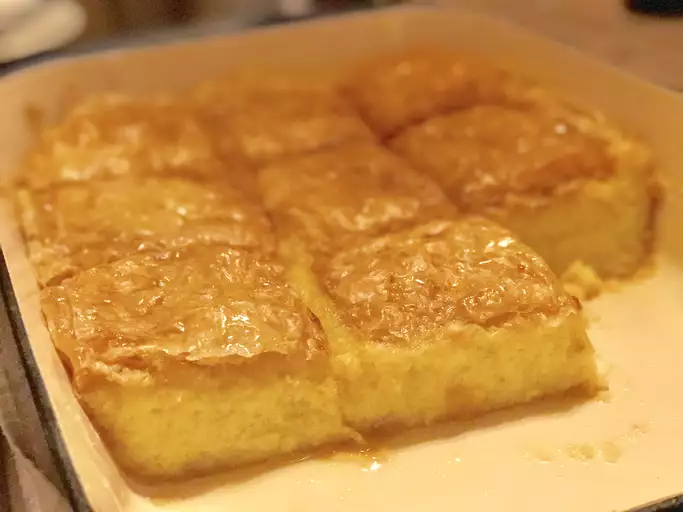

Galaktoboureko

Description
Galaktoboureko is a traditional Greek desert featuring a custard in a crispy phyllo pastry shell.
Ingredients
- 2 1/2 cups white sugar, divided
- 1 cup semolina flour
- 3 1/2 tablespoons cornstarch
- 1/4 teaspoon salt
- 6 cups whole milk
- 6 large eggs
- 1 teaspoon vanilla extract
- 3/4 cup butter, melted
- 12 sheets psyllo dough
- 1 cup water
Steps
- Whisk 1 cup sugar, semolina, cornstarch, and salt together in a medium bowl until no cornstarch clumps remain.
- Bring milk to a boil in a large saucepan over medium heat. Gradually stir in semolina mixture with a wooden spoon. Cook, stirring constantly, until mixture thickens and comes to a full boil. Remove from the heat and keep warm.
- Beat eggs in a large bowl with an electric mixer on high speed. Add 1/2 cup sugar and beat for full 10 minutes until thick and pale. Stir in vanilla. Fold mixture into the hot semolina mixture. Partially cover the pan and set aside to cool.
- Preheat the oven to 350 degrees F (175 degrees C)
- Butter a 9x13-inch baking dish. Place one phyllo sheet into the pan and bush with melted butter; repeat with six more sheets. Pour custard into the pan, then add the remaining phyllo sheets, one at a time, brushing each with butter.
- Bake in the preheated oven until top crust is crisp and custard filling has set, 40 to 45 minutes.
- When the custard is just about to finish baking, stir remaining 1 cup sugar and water together in a small saucepan; bring to a boil.
- Remove custard from the oven and spoon got syrup over top, particularly around the edges. Let cool to room temperature, then cut into 16 squares and serve.